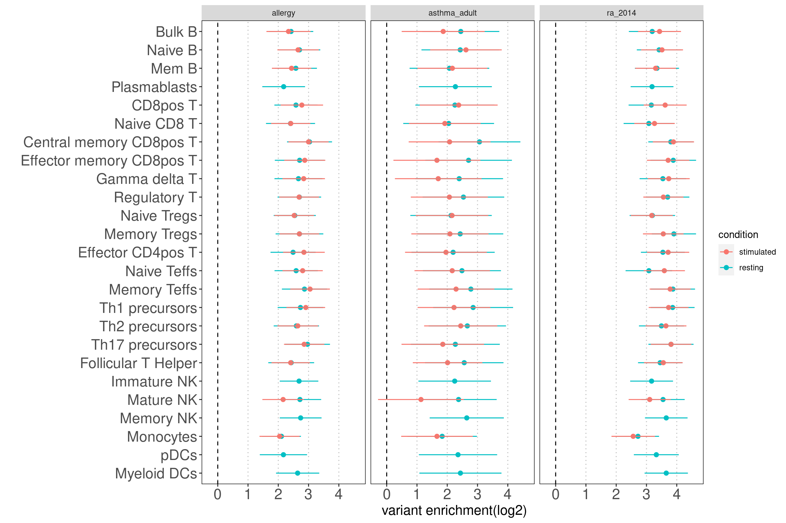
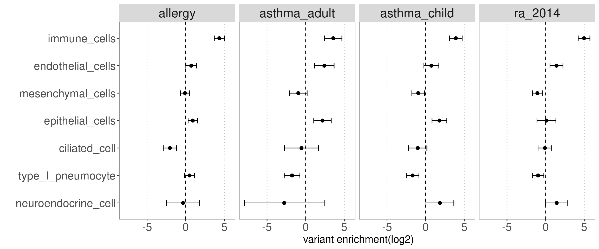
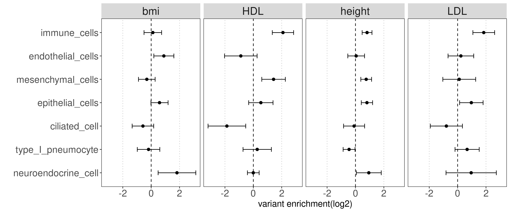
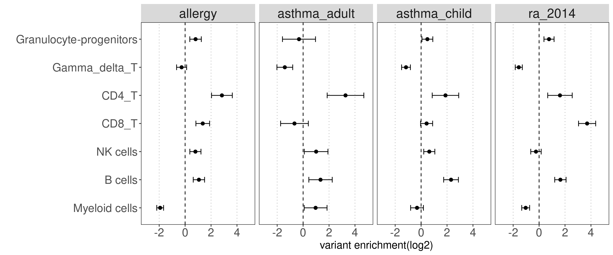
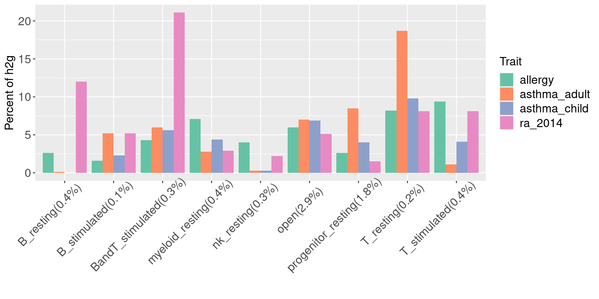
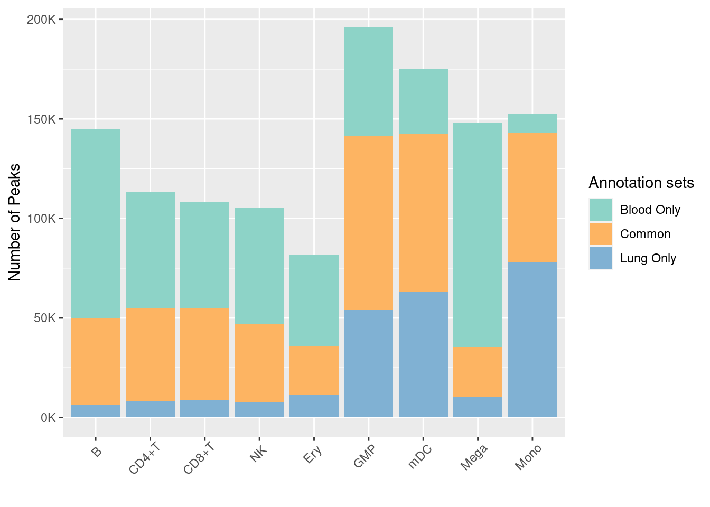

asthma_prelim_results
Last updated: 2021-11-17
Checks: 7 0
Knit directory: funcFinemapping/
This reproducible R Markdown analysis was created with workflowr (version 1.6.2). The Checks tab describes the reproducibility checks that were applied when the results were created. The Past versions tab lists the development history.
Great! Since the R Markdown file has been committed to the Git repository, you know the exact version of the code that produced these results.
Great job! The global environment was empty. Objects defined in the global environment can affect the analysis in your R Markdown file in unknown ways. For reproduciblity it's best to always run the code in an empty environment.
The command set.seed(20210404) was run prior to running the code in the R Markdown file. Setting a seed ensures that any results that rely on randomness, e.g. subsampling or permutations, are reproducible.
Great job! Recording the operating system, R version, and package versions is critical for reproducibility.
Nice! There were no cached chunks for this analysis, so you can be confident that you successfully produced the results during this run.
Great job! Using relative paths to the files within your workflowr project makes it easier to run your code on other machines.
Great! You are using Git for version control. Tracking code development and connecting the code version to the results is critical for reproducibility.
The results in this page were generated with repository version 093135b. See the Past versions tab to see a history of the changes made to the R Markdown and HTML files.
Note that you need to be careful to ensure that all relevant files for the analysis have been committed to Git prior to generating the results (you can use wflow_publish or wflow_git_commit). workflowr only checks the R Markdown file, but you know if there are other scripts or data files that it depends on. Below is the status of the Git repository when the results were generated:
Ignored files:
Ignored: .ipynb_checkpoints/
Ignored: analysis/ldsc_results.nb.html
Ignored: analysis/mtsplice_finemapping_results.nb.html
Ignored: analysis/results.nb.html
Ignored: analysis/snp_finemapping_results.nb.html
Ignored: analysis/splicing.nb.html
Untracked files:
Untracked: SNPs_categories,png
Untracked: SNPs_categories.png
Untracked: analysis/asthma_prelim_results_archive.Rmd
Untracked: analysis/asthma_prelim_results_cp.Rmd
Untracked: analysis/asthma_results_cp.Rmd
Untracked: analysis/enhancer_gene_feature.Rmd
Untracked: analysis/feedback.Rmd
Untracked: analysis/gene_finemapping_results.Rmd
Untracked: analysis/learn_susie.Rmd
Untracked: analysis/mtsplice_finemapping_results.Rmd
Untracked: analysis/notes.Rmd
Untracked: analysis/snp_finemapping_results.Rmd
Untracked: analysis/splicing.Rmd
Untracked: code/.ipynb_checkpoints/
Untracked: code/ldsc_regression.sh
Untracked: code/make_plots.R
Untracked: code/run_ldsc.sh
Untracked: code/run_ldsc_with_bed.sh
Untracked: code/run_susie.R
Untracked: code/run_torus.sh
Untracked: code/split_vcf.sh
Untracked: data/num_overlaps_finemapped_SNPs_and_ctcf.txt
Untracked: data/scz_2018
Untracked: data/torus_enrichment_novel_annot.est
Untracked: data/torus_joint_enrichment.est
Untracked: data/torus_joint_refined_enrichment.est
Untracked: enhancer_gene_feature.rmd
Untracked: fig1_panels.pdf
Untracked: fig2.pdf
Untracked: fig_panel2.pdf
Untracked: gene_mapping.pdf
Untracked: output/background_SNPs_annotated_percent.txt
Untracked: panel_figure2.pdf
Untracked: test.txt
Unstaged changes:
Modified: analysis/asthma_results.Rmd
Modified: analysis/enrichment_analysis.Rmd
Deleted: output/AAD/asthma/Caldero2019_diffDA_annot_percent.txt
Deleted: output/AAD/asthma/Caldero2019_stimuDA_annot_percent.txt
Deleted: output/AAD/asthma/celltype_specific_adult_lungs_torus.est
Deleted: output/AAD/asthma/diffe_adult_blood_torus.est
Deleted: output/AAD/asthma/joint_blood_immune_rest_vs_stimu.est
Deleted: output/AAD/asthma/joint_lung_vs_blood_immune_diff_torus.est
Deleted: output/AAD/asthma/joint_lung_vs_blood_immune_stimu_torus.est
Deleted: output/AAD/asthma/lung_clusters_dict.txt
Deleted: output/AAD/asthma/lung_clusters_info.txt
Deleted: output/AAD/asthma/stimu_adult_blood_torus.est
Deleted: output/AAD/asthma/torus_enrichment_all_rest.est
Deleted: output/AAD/asthma/torus_enrichment_all_stimulated.est
Deleted: output/AAD/asthma/zhang2021_annot_percent.txt
Deleted: output/AAD/asthma/zhang2021_cell_type_overlaps.txt
Deleted: output/AAD/asthma/zhang2021_peaks_per_celltype.txt
Deleted: output/asthma/Caldero2019_diffDA_annot_percent.txt
Deleted: output/asthma/Caldero2019_stimuDA_annot_percent.txt
Deleted: output/asthma/celltype_specific_adult_lungs_torus.est
Deleted: output/asthma/diffe_adult_blood_torus.est
Deleted: output/asthma/joint_lung_vs_blood_immune_diff_torus.est
Deleted: output/asthma/joint_lung_vs_blood_immune_stimu_torus.est
Deleted: output/asthma/lung_clusters_dict.txt
Deleted: output/asthma/lung_clusters_info.txt
Deleted: output/asthma/stimu_adult_blood_torus.est
Deleted: output/asthma/zhang2021_annot_percent.txt
Deleted: output/asthma/zhang2021_cell_type_overlaps.txt
Deleted: output/asthma/zhang2021_peaks_per_celltype.txt
Note that any generated files, e.g. HTML, png, CSS, etc., are not included in this status report because it is ok for generated content to have uncommitted changes.
These are the previous versions of the repository in which changes were made to the R Markdown (analysis/asthma_prelim_results.Rmd) and HTML (docs/asthma_prelim_results.html) files. If you've configured a remote Git repository (see ?wflow_git_remote), click on the hyperlinks in the table below to view the files as they were in that past version.
| File | Version | Author | Date | Message |
|---|---|---|---|---|
| Rmd | 093135b | Jing Gu | 2021-11-17 | estimate heritability |
| html | 6ce4a8d | Jing Gu | 2021-11-16 | Build site. |
| Rmd | 0c42fee | Jing Gu | 2021-11-16 | compare with lungs |
| html | a6ca0c7 | Jing Gu | 2021-11-16 | Build site. |
| Rmd | 08ab4ff | Jing Gu | 2021-11-16 | compare with lungs |
| html | 1bd2749 | Jing Gu | 2021-11-12 | Build site. |
| Rmd | f375e53 | Jing Gu | 2021-11-12 | compare lung and blood |
| html | 63b3472 | Jing Gu | 2021-11-11 | Build site. |
| Rmd | 912c9b6 | Jing Gu | 2021-11-11 | analyzed lung immune cells |
| html | be4dede | Jing Gu | 2021-11-04 | Build site. |
| Rmd | dd720fe | Jing Gu | 2021-11-04 | enrichment analysis for AAD traits |
| html | 8a43e8f | Jing Gu | 2021-10-26 | Build site. |
| Rmd | 1892d30 | Jing Gu | 2021-10-26 | wflow_publish("analysis/asthma_prelim_results.Rmd") |
| html | 2945369 | Jing Gu | 2021-10-26 | Build site. |
| Rmd | b3259c5 | Jing Gu | 2021-10-26 | wflow_publish("analysis/asthma_prelim_results.Rmd") |
| html | 5b65bd1 | Jing Gu | 2021-10-26 | Build site. |
| Rmd | db3c6f9 | Jing Gu | 2021-10-26 | test enrichment for asthma risk variants |
Asthama and Allergy diseases
The main goal is to identify causal variants, genes and cell types relevant to AAD by integrating omics data of lung samples. We hypothesize that open chromatin regions of lung-resident immune cells can explain broader heritability for AAD than those of blood immune cells. The disease associated variants annotated by these regulatory functions are more likely to contribute to disease risk, so this prior knowledge can be leveraged to prioritize risk variants in GWAS loci.
Dataset
ATAC-seq data for Blood immune cells (Caldero2019)
Dataset: ATAC-Seq profiles for FACS-sorted cells from the peripheral blood of up to 4 healthy donors
Output files:
1. An ATAC-seq count table with a union set of peaks as rows and individual cell as columns
2. A Sample QC table that includes number of peaks and cell type identity for each cell
3. Significant differentially accessible regions when compared to progenitor cells
4. Significant differentially accessible regions under stimulation
Procedure: I used the number of peaks after QC for each cell to extract its corresponding ATAC-Seq peaks from the count table. Details of the procedure
For the cells of interest, I sorted their corresponding columns of the count table and store the top N number of peaks according to the number of peaks from the QC table as cell type resolved peaks.
ATAC-seq data for hematopoietic cells (Ulirsch2019)
Dataset: ATAC-Seq profiles for FACS-sorted cells from human peripheral blood or bone marrow.
Output files:
1.peak files downloaded from: https://github.com/caleblareau/singlecell_bloodtraits/tree/master/data/bulk/ATAC/narrowpeaks
scATAC-seq data for lung tissues (Wang2020)
Dataset: scATAC-Seq and scRNA-seq profiles for small airway region of right middle lobe (RML) lung tissue from 3 donors at different ages
Output files:
1. peak files downloaded from web portal: https://www.lungepigenome.org/
scATAC-seq data for fetal hematopoietic cells (Ronzoni2021)
Dataset: scATAC-Seq and scRNA-seq profiles of human immunophenotypic blood cells from fetal liver and bone marrow
Output files:
Downloaded from gitlab page: to be added
1. A merged normalized peak table with a union set of peaks as rows and individual cell as columns
2. A meta table that includes number of peaks and predicted cell type identity for each cell
3. A raw count table with peaks as rows and individual cell as columns
Procedure: I used the number of peaks for each cell from the meta table to extract its corresponding ATAC-Seq peaks from the merged peak table. The number of peaks is equivalent to the amount of non-zero peaks.
TORUS run for individual Blood annotation
Motivation:
- perform QC check for the Caldero2019 dataset
- have a senes of which cell types are potentially relevant to AAD
Results: Overall, the magnitude of enrichment estimates are much smaller than that in figure 5b. The discrepancy can be due to different GWAS datasets and enrichment method. They used LDSC to estimate enrichment coefficients, which have a better control on the overlapping peaks between many annotations. 
TORUS run for individual lung annotation
Motivation:
- perform QC check for this dataset
- have a senes of which cell types in lungs are potentially relevant to AAD
Results: Data look good as the open chromatin regions of most cell types in lungs are enriched with disease risk variants. 
TORUS joint run for lung vs blood immune cells
Motivation:
Test the hypothesis that open chromatin regions of lung-resident immune cells can explain broader heritability for AAD than those of blood immune cells.
Procedure: For each immune group (B cells, T cells, Myeloids, NK cells), I ran TORUS over pairs of annotations from lung and blood one at a time. Pairs of annotations as follows:
- B cells (lung) vs B cells (blood)
- T cells (lung) vs CD4+ T (blood)
- T cells (lung) vs CD8+ T (blood)
- NK cells (lung) vs NK cells (blood)
- Fibroblast cells (lung) vs Myeloids (blood)
Results: Overall, we see lung-resident immune cells show significant enrichemnt conditional on blood immune cells in AAD, but not in RA. Compared with a control set of traits, there is a large difference between blood and lung enrichment estimates for Myeloid, CD4+ and CD8+ T cells in AAD.

Ulirsch2019 dataset
Motivation: Replicate the above result in a different blood dataset
Results:
Overall, the enrichment of lung annotations dwindles in a great extent when jointly run with blood annotations. There is one exception that CD8+ T cells in lungs show significant enrichment with child-onset asthma.


| Version | Author | Date |
|---|---|---|
| a6ca0c7 | Jing Gu | 2021-11-16 |
Joint TORUS run for annotation sets
major clusters in lung dataset
- Mesenchymal cells
- Immune cells
- epithelial cells
- endothelial cells
- others(neuroendocrine cells, type I pneumocyte, ciliated cells)
Motivation: determine how each cluster with similar chromatin accessibility patterns contribute to AAD heritability.
Results:
We observed some non-immune cell types such as epithelial cells, endothelia cells do contribute to genetic risks of AAD, though not as much as immune cells. 

| Version | Author | Date |
|---|---|---|
| a6ca0c7 | Jing Gu | 2021-11-16 |
annotation sets for Caldero2019
grouped by lineages
Motivation: Running annotation sets in a joint model enables us to idenity the relevant contribution in open chromatin regions of each immune cell type to traits. LSDC is a better tool to use as we expected many overlaps of acccessible peaks across the sub-clusters of immune cells, which can make the estimation of TORUS's joint model unstable. Here we grouped the cell types and used TORUS to get a quick run of which group of cell types have significant enrichment.
Procedure:
For Caldero2019 dataset: Immune cells were grouped into six main categories and merged across two conditions. The peaks in these groups can be overlapped.
For Ronzoni2021 dataset, I took a union set of peaks from all cells that were predicted to be granulocytes progenitors.
Results:
Consistent with prior knowledge, we see enrichment of granulocyte progenitors with genetic risk of allergy.
Summary:
- Overall, we see the differences in immune cell components that contribute to these three autoimmune diseases.
- GPs and CD4+ T cels are consistently significant in enrichment of risk variants for all three diseases.
grouped by lineages and conditions
Procedure: Immune cells were grouped first into six main categories and then separated by conditions. This set of 12 annotations were jointly tested via TORUS. 
grouped by disjoint peaks
Motivation: Using disjoint groups of peaks from immune cell types to estimate separate contributions of immune components to disease heritability. These annotations are ideal predictors for the linear model used in either LDSC or TORUS to obtain unbiased enrichment estimators.
Procedure: The disjoint peaks were directly downloaded from the paper. 
explained Heritability
Disjoint immune peaks in blood vs. immune groups in lung
Motivation:
We will do a joint analysis on three disjoint peak sets - only in blood, only in lung and shared. In this way, we can both estimate enrichments and compute for percent of genetic signals explained by each set.
Procedure:
I started from the cell types defined with disjoint sets of immune peaks from Caldero2019 dataset. For each cell type, I use bedtools intersect to call the overlapped peaks and peaks that are unique to either side for lung and blood peaks. Then, the overlapped peaks will be merged.
Heritability estimation 

sessionInfo()R version 4.0.4 (2021-02-15)
Platform: x86_64-pc-linux-gnu (64-bit)
Running under: Scientific Linux 7.4 (Nitrogen)
Matrix products: default
BLAS/LAPACK: /software/openblas-0.3.13-el7-x86_64/lib/libopenblas_haswellp-r0.3.13.so
locale:
[1] LC_CTYPE=en_US.UTF-8 LC_NUMERIC=C
[3] LC_TIME=en_US.UTF-8 LC_COLLATE=en_US.UTF-8
[5] LC_MONETARY=en_US.UTF-8 LC_MESSAGES=en_US.UTF-8
[7] LC_PAPER=en_US.UTF-8 LC_NAME=C
[9] LC_ADDRESS=C LC_TELEPHONE=C
[11] LC_MEASUREMENT=en_US.UTF-8 LC_IDENTIFICATION=C
attached base packages:
[1] stats graphics grDevices utils datasets methods base
other attached packages:
[1] dplyr_1.0.4 knitr_1.31 ggplot2_3.3.3 workflowr_1.6.2
loaded via a namespace (and not attached):
[1] Rcpp_1.0.7 highr_0.8 pillar_1.5.0 compiler_4.0.4
[5] bslib_0.2.4 later_1.1.0.1 jquerylib_0.1.3 git2r_0.28.0
[9] tools_4.0.4 digest_0.6.27 jsonlite_1.7.2 evaluate_0.14
[13] lifecycle_1.0.0 tibble_3.0.6 gtable_0.3.0 pkgconfig_2.0.3
[17] rlang_0.4.11 DBI_1.1.1 yaml_2.2.1 xfun_0.21
[21] withr_2.4.2 stringr_1.4.0 generics_0.1.0 fs_1.5.0
[25] vctrs_0.3.8 sass_0.3.1 tidyselect_1.1.1 rprojroot_2.0.2
[29] grid_4.0.4 glue_1.4.2 R6_2.5.1 fansi_0.5.0
[33] rmarkdown_2.7 farver_2.1.0 purrr_0.3.4 magrittr_2.0.1
[37] whisker_0.4 scales_1.1.1 promises_1.2.0.1 ellipsis_0.3.2
[41] htmltools_0.5.1.1 assertthat_0.2.1 colorspace_2.0-2 httpuv_1.5.5
[45] labeling_0.4.2 utf8_1.2.2 stringi_1.5.3 munsell_0.5.0
[49] crayon_1.4.1